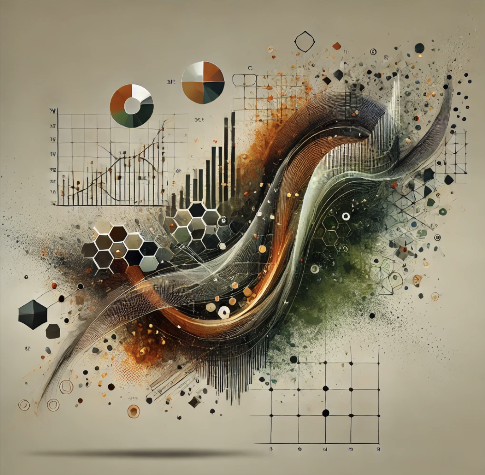

$500/mo
- Unlimited email discussion and consultation
- 1 hour advisory session per month
- 1 hour of hands-on analysis per month
- Discounted rates on additional work or projects
We strengthen the workflow and statistical reasoning behind your analytics so your results are consistent, transparent, and trusted.

We design analytics systems that replace manual reporting and fragile metrics with structured, reproducible workflows.
These systems may take the form of automated reporting pipelines, interactive applications, statistical workflows, or internal analytics infrastructure — tailored to the needs of your organization. The common thread? 👇
Disciplined design. Reproducibility. Statistical clarity.
Structure Before Sophistication
Effective analytics systems require both structure and sound reasoning. We approach projects through two complementary stages that reinforce one another.
Before refining metrics or models, we focus on creating a clear and reproducible analytical structure.
This might involve:
The goal is to replace ad hoc processes with systems that are transparent, maintainable, and reproducible.
Once the analytical structure is in place, we focus on the reasoning behind the analysis itself.
This may include:
The result is analytics that are not only well-structured, but also statistically sound and defensible.
Many organizations focus on dashboards or models first. We focus on the systems and reasoning that make those outputs trustworthy.
Our approach emphasizes transparency, reproducibility, and long-term maintainability — often using open, auditable technologies that reduce reliance on proprietary platforms.
Let us be your partner in data science, statistics, and advanced analytics!
Whether you’re pondering how to make best use of a dataset, need help determining the right methodology or approach, or just need a second set of eyes — having immediate access to an experienced statistician and data scientist for you and your team can clear roadblocks, avoid headaches, and keep things moving.
Business
For businesses and organizations
$500/mo
Individual
For students and independent professionals
$100/mo
View our Terms of Service
Need something different? No problem! We can work with you to develop a retainer commitment suited to your needs.
A statistician and data scientist in Central Wisconsin, Alex has over a decade of experience learning, teaching, and doing data science work with a wide range of tools, methodologies and problem contexts. His primary focus is on delivering genuine value through the use of statistics and open data science tools, and empowering others to do the same.
Check out his statistics blog 👇

Use the form below to request a strategy call, or email alex@centralstatz.com directly.
Alex Zajichek, Owner
Located in Wausau, WI, USA